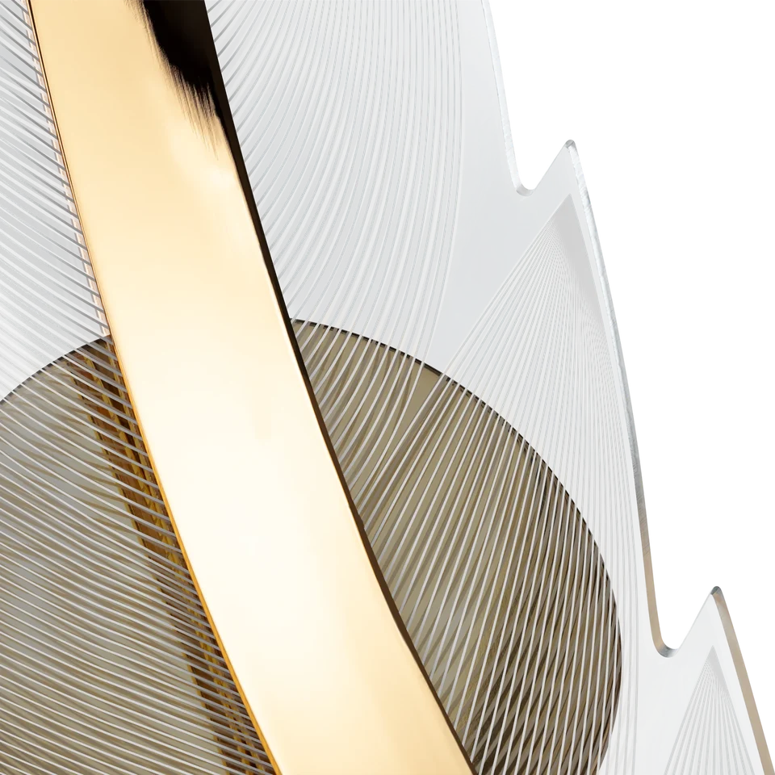

STUDIO / FINALRetouching / 01
Metal, light and glass
Product retouching of a pendant light: clean surfaces, controlled reflections and a carefully isolated silhouette. Detail views preserve material texture.
Explore the project and full-size artwork.
Open case ↗